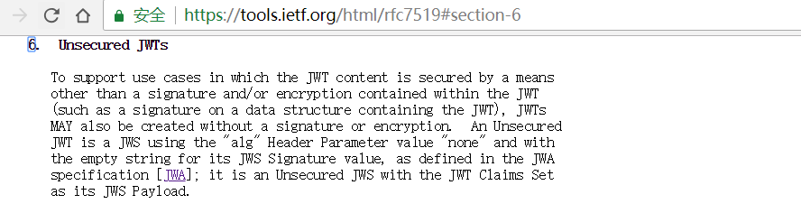
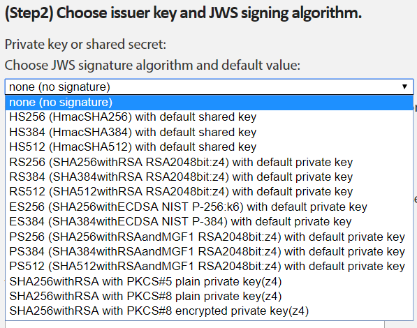
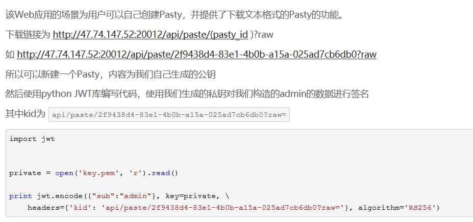

JSON Web Token的认识与攻击
本文首发 Freebuf 。略有更新。
0x01 初识JWT
JWT （ JSON Web Token 的缩写）是一串带有声明信息的字符串，由服务端用加密算法对信息签名来保证其完整性和不可伪造。Token里可以包含所有必要信息，这样服务端就无需保存任何关于用户或会话的信息，JWT可用于身份认证、会话状态维持、信息交换等。
JWT 由三部分构成，分别称为 header 、payload 和 signature ，各部分用. 相连构成一个完整的Token，形如xxxxx.yyyyy.zzzzz 。
分别看下各个部分：
header ：
使用一个JSON格式字符串声明token的类型和签名用的算法等，形如{"alg": "HS256", "typ": "JWT"} 。该字符串经过Base64Url编码后形成JWT的第一部分xxxxx。
Base64Url编码可以用这段代码直观理解：
1 | from base64 import * |
payload :
使用一个JSON格式字符串描述所要声明的信息，分为 registered 、 public 、 和 private 三类，形如{"name": "John Doe", "admin": true} ，具体信息可参考 RFC7519 的 JWT claims 部分。
同样的，该字符串经过Base64Url编码形成JWT的第二部分yyyyy。
signature :
将 xxxxx.yyyyy 使用alg 指定的算法加密，然后再Base64Url编码得到JWT的第三部分zzzzz 。所支持的算法 类型取决于实现，但HS256 和 none 是强制要求实现的。
0x02 简单应用
在本地运行起简单的基于Express的可发放和处理JWT的服务。
- 安装Node.js。Node.js是JavaScript运行时环境，采用轻量高效的事件驱动、无阻塞I/O模型，拥有最大的开源库生态nmp。
1 | Windows平台可在 https://nodejs.org/en/download/ 下载安装包 |
- 安装Express，一款基于Node.js的快速、灵活、极简的Web框架。
1 | http://expressjs.com/en/starter/installing.html |
- 运行本地服务
新建 index.js ，内容如下
1 | const express = require('express') |
运行node index.js ，就可从本地访问 http://localhost:3000 。
- 安装必要模块： 适用于Node.js的JWT编解码模块
node-jwt-simple和 cookie解析模块cookie-parser
1 | https://github.com/hokaccha/node-jwt-simple |
- 一个简单的本地demo
1 | //index.js |
- 推荐几个在线工具
- https://jwt.io
- by Sjoerd Langkemper
- by Kenji Urushima
- 支持更多算法 kjur/jsjws
0x03 攻击面
发现敏感信息
JWT中的header 和 payload 虽然看起来不可读，但实际上都只经过简单编码，开发者可能误将敏感信息存储在里面。使用上述工具可以方便地解码JWT中前两部分的信息。
指定算法为none
上面提到算法 none 是JWT规范中强制要求实现的，但有些实现JWT的库直接将使用none 算法的token视为已经过校验。这样攻击者就可以设置alg 为none ，使signature 部分为空，然后构造包含任意payload 的JWT来欺骗服务端。

将签名算法从非对称类型改为对称类型
使用非对称加密算法（主要基于RSA、ECDSA，如S256）分发JWT的过程是使用私钥（private）加密生成JWT，使用公钥（public）解密验证。
使用对称加密算法（主要基于HMAC，如HS256）分发JWT的过程是使用同一个密钥（secret）生成和验证JWT。
如果服务端期待收到的算法类型为RS256，然后以RS256和public去验证JWT，而实际上收到的算法类型是HS256，那么服务端就可能尝试把public当作secret，然后用HS256算法解密验证JWT。
由于RS256的public人人都可获得，攻击者可以预先以public为密钥，用HS256算法伪造包含任意payload 的JWT，从而成功通过服务端的验证。

爆破密钥
JWT的安全性依赖于密钥的保密性，任何拥有密钥的人都可以构造任何内容的合法token。
当一个JSON Web Token 被分发出去，如果密钥不够强壮就存在被爆破的风险，而且整个爆破过程可以离线进行。
已经有人写了一些工具，推荐如下：
伪造密钥
有时JWT采用header 中的kid 字段关联校验算法的密钥，这个密钥可能是对称加密的密钥，也可能是非对称加密的公钥。如果能够猜测kid 和 密钥的关联性，攻击者就可能修改kid 来欺骗服务端，使其校验时使用攻击者可控的密钥，于是攻击者就可以伪造任意内容的可通过校验的JWT。
2017 HITB Pasty
关联性：kid是密钥URI的一部分。

2018强网杯 easyweb
关联性：kid 带入数据库查询对应密钥，可联合查询或者盲注。
详见 http://findneo.github.io/180430ciscn/#easyweb
0x04 安全建议
- 验证函数应忽略JWT中的
algo字段，预先就明确JWT使用的算法，如果需要使用多种算法，可以在header中使用表示”key ID” 的kid字段，查询每个kid对应的算法。 - JWT/JWS 标准应该移除
header中的algo字段。JWT的许多安全缺陷都来自于开发者依赖这一客户端可控的字段。 - 开发者应升级相应库到最新版本，因为旧版本可能存在致命缺陷。